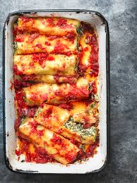

Caneloni

Caneloni Quentinho
Os canelonis são uma receita mito complexa de se realizar, envolve uma mistura soberba de massa e um talento natural
para enrolar umas passas. Convém não meter muito molho na xixa para não escorrer e queimar as beiças.
Ingredients
- Massa
- Carne
- Molho Bolonhesa
Steps
- Fazer a Massa com as mãos e um rolo de massa
- Enrolar a massa junto com um pedaço de carne generoso
- Meter salsa por cima e polvilhar com ouro
- Cobrir com natas e comer cru